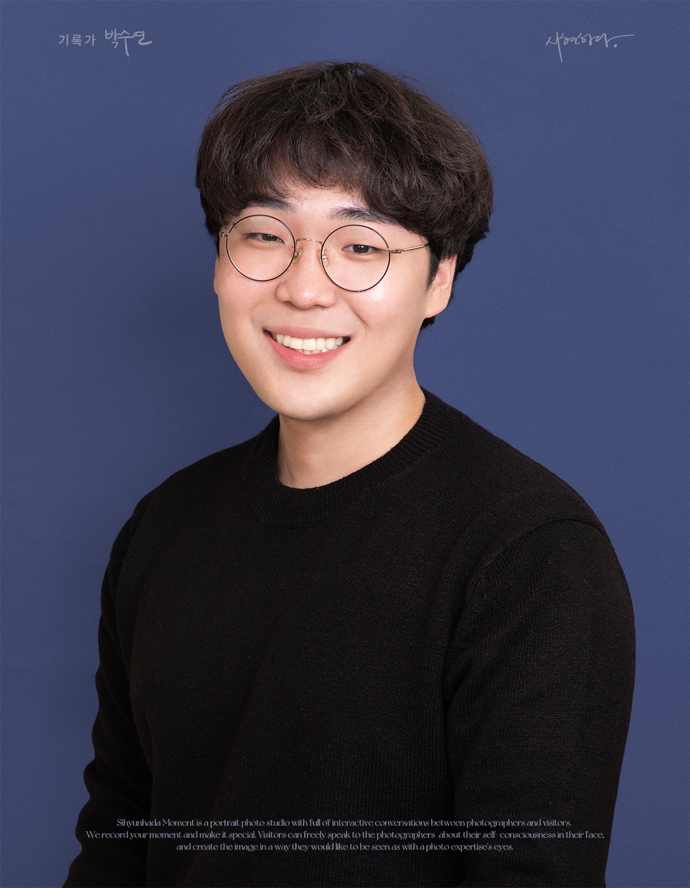

Designing the future
of interactive play.
PhD student at KAIST Graduate School of Culture Technology in the Games and Life Lab. My research spans Human-Computer Interaction and Generative AI in games, focusing on creating intelligent, autonomous agents that support diverse players, including those with disabilities.

No ImageScroll
Education
KAIST
PhD, Graduate School of Culture Technology
KAIST
Master’s, Graduate School of Culture Technology
Handong Global University
ICT Convergence & Product Design
Ateneo de Manila University
Management of Applied Chemistry
Technical Skills & Methods
AI & Engineering
Large Language Models (LLMs)
RAG Pipelines
Prompt Engineering
Open-weight Models (Gemma)
Python
Interactive Environments
Unreal Engine
XR / VR Interfaces
Meta Quest Pro (Eye-tracking)
Minecraft AI Integrations
HCI Research Methods
Participatory Design
Mixed-Methods Evaluation
Quantitative Typology Studies
Thematic Analysis
Inclusive Design
Research Experience
Inclusive Conversational AI Service for Game Accessibility Enhancement
Student Researcher Lead | National Research Foundation of Korea (NRF)
- Led user research and prototype development for an inclusive conversational AI assistant designed to support gamers with disabilities across diverse play contexts.
- Conducted interviews, participatory design workshops, and iterative concept development to identify accessibility needs and translate them into AI-supported interaction scenarios.
- Contributed to the design of a research and collaboration framework connecting academia, industry, and rehabilitation stakeholders to inform future accessibility guidelines and real-world deployment.
Collaborators: Samsung Electronics (Corporate Design Center), Nexon Intelligence Labs, Smilegate D&I, Korea National Rehabilitation Center, SpecialEffect (UK)
Preserving the Haenyeo Legacy: Serious Games for Social Impact
Student Researcher | Leverhulme Trust International Fellow
- Contributed to the design of a serious game project aimed at preserving and communicating the cultural heritage of the Jeju Haenyeo, with a focus on intergenerational knowledge transmission.
- Helped develop game concepts and narrative structures that connect Haenyeo practices, environmental change, and women’s community knowledge in an accessible interactive format.
- Supported international research collaboration and field-based design discussions examining how serious games can contribute to cultural sustainability and community resilience.
Partners: Brunel University London (Games Research Lab), Jeju Haenyeo Museum, the Haenyeo communities of Sinrye-ri, Daepyeong-ri, and Yeongnak-ri
Real-Time XR Interface Technology for Environmental Adaptation
Student Researcher | IITP
- Participated in the development of an XR interface system for dynamically adapting virtual content to real-world environmental and spatial conditions.
- Contributed to the design and implementation of interaction concepts involving adaptive virtual objects and multimodal interface behavior in mixed-reality settings.
- Supported research on immersive visual-haptic feedback to improve presence and environmental responsiveness in XR experiences.
Partners: Fraunhofer Institute (Germany), NYU, UniSA, Anipen, bHaptics
Defense Technology Research: Camouflage Effectiveness
Student Researcher | Korea Aerospace Industries (KAI)
- Performed computational and visual evaluation of KF-21 Boramae camouflage effectiveness across altitude, terrain, and meteorological conditions to assess detectability under varied operational environments.
- Processed environmental imagery and simulation-based datasets to analyze the interaction between aircraft surface patterns, background context, and visibility performance.
- Developed camouflage colorways and pattern configurations for applied defense design, with selected proposals incorporated into real project outputs.
Smart City Infrastructure & AI Object Tracking
Student Researcher
- Engineered IoT-based roadside sensing hardware for urban data acquisition, including enclosure design and rapid prototyping through 3D-printed sensor housings.
- Supported AI-driven traffic object tracking pipelines by contributing to data preprocessing, detection workflow refinement, and model-level optimization for real-world road scenes.
- Improved detection robustness in dense urban environments through anchor-box optimization and applied computer vision experimentation for high-traffic conditions.
Honors & Awards
Grand Prize (최우수상) – Edu4.0 Q TA
KAIST Education4.0 Q
- Recognized for outstanding teaching support and excellence in presenting TA activity for KAIST's innovative teaching and learning model, Education4.0 Q.
Selected Entrepreneurial Team
Climate Tech Track | Asan Nanum Foundation
- Selected as a representative startup team in the Asan UniverCT incubation program for climate-tech ventures.
- Secured early-stage funding and mentorship through KAIST and the Asan Nanum Foundation ecosystem.
Grand Prize (President’s Award)
Pohang Culture & Arts Hackathon
- Led the technical implementation of a large-scale Unreal Engine media facade prototype demonstrating a smart-city experience concept.
Excellence Award
National Metaverse Developer Contest
- Developed a gamified digital therapeutic concept for eye-muscle rehabilitation using Meta Quest Pro eye-tracking capabilities.
Outstanding Student Research
Korea Multimedia Society (KMMS)
- Presented research on eye-tracking-based VR interactive games, examining oculomotor response patterns for immersion and accessibility design.
University President’s Award
Startup Idea Competition
- Designed a startup concept integrating ESG strategy with augmented reality services and was selected as the top proposal.
Outstanding Student Research
Korea Multimedia Society (KMMS)
- Presented experimental research on VR exposure therapy for cynophobia, proposing spatiotemporal design factors for improved intervention effectiveness.
Patents & Certifications
Certifications
Microsoft Azure AI-900
Patent: AI-Based Tech Acceptance
Korean Intellectual Property Office (No. 40-2022-0179493)
Co-patentor with Impactive AI Corp.
Dec 23, 2022
Publications
Chae, J., Seo, G., Jeong, S., & Doh, Y. Y. (2026). Design principles of Game AI Assistant (GAIA) for players with disabilities: Accessibility needs and ethical concerns. Proceedings of the 31st International Conference on Intelligent User Interfaces (IUI ’26). ACM. First Author
Park, E., Chae, J., Eum, K., Choi, E., Oh, H., & Doh, Y. Y. (2025). Press start to continue: A thematic analysis of the iterative process of hardcore players with disabilities adapting to gameplay difficulties. Extended Abstracts of the CHI Conference on Human Factors in Computing Systems (CHI EA ’25). ACM. Co-first Author
Chae, J., & Doh, Y. Y. (2025). The identity and role of game NPCs: Past, present, and future. Proceedings of the 1st DiGRA Korea Conference 2025. First Author
Oh, H., Eum, K., Park, E., Chae, J., Seo, J., Choi, E., & Doh, Y. Y. (2025). RAG-Enhanced LLM Chatbot for Game Accessibility: Development and Evaluation of GAIA. Korea HCI Conference 2025. Co-second
Choi, E., Chae, J., & Doh, Y. Y. (2024). Prompting-Based LLM Framework for Ethical Decision-Making in the Trolley Dilemma: Embedding Hofstede's Cultural Dimensions Theory (PLETH). Korean Artificial Intelligence Association Conference 2024. Co-first Author
Eum, K., Park, E., Chae, J., & Doh, Y. Y. (2024). GAIA: A game AI assistant service framework integrating problem-solving and emotion regulation strategies. Korea Computer Graphics Society Conference 2024. Co-first Author
Park, E., Chae, J., Kim, K., Yi, H. W., Lootah, M. K., & Doh, Y. Y. (2024). Challenges and opportunities of game NPC research using LLM: A scoping review. Korean Game Society Conference 2024. Co-first Author
Kim, Y. B., & Chae, J. (2024). A technical literature review of distributed management structure: Focusing on the multi-label system of HYBE Co., Ltd. Korea Technology Innovation Society Conference 2024.
Kim, Y. B., & Chae, J. (2024). From BigHit to HYBE: Sentiment analysis and strategic transition through news data. Korea Society for Innovation Management & Economics Conference 2024.
Chae, J., Yoo, S., Lee, Y., Kim, Y., Kim, H., & Han, D. (2023). Analysis of the effects of positive and negative VR game contents on enhancing environmental awareness based on self-reliant and team-based play styles. Journal of the Korea Computer Graphics Society, 29(3), 137–147. First Author
Chae, J., Kim, H., Kim, Y., Kim, M., Kim, S., & Han, D. (2023). A study on the effect of group commitment on improving awareness of recycling through gamification. Korea HCI Conference 2023. First Author
Kim, Y., Chae, J., Lee, Y., Kim, H., Lee, Y., & Han, D. (2023). Enhancing participation in rehabilitation for diplopia through gamification. Korea Computer Graphics Society Conference 2023.
Lee, Y. S., Kim, Y., Kim, H., Chae, J., Lee, Y., & Han, D. (2023). Eye-tracking-based VR interactive games for eye movements. Korea Multimedia Society Conference 2023.
Yoon, D., Park, S., Song, Y., Chae, J., & Chung, D. (2023). Methodology for improving the performance of demand forecasting through machine learning. Preprint available at Research Square.
Yoo, S., Chae, J., Kim, H., Lee, Y., Kim, S., Kim, Y., & Han, S. (2022). Explored systematic exposure methods influenced by spatiotemporal factors in VR treatment for cynophobia. Korea Multimedia Society Conference 2022.
Park, S., Yoon, D., Chae, J., Song, Y., & Chung, D. (2022). Enhanced predictive model performance through clustering. Korea Society of Management Information Systems Conference 2022.
Park, S., Yoon, D., Song, Y., Chae, J., & Chung, D. (2022). Combined regression coefficient reduction method with clustering for performance enhancement. Korea Intelligent Information Systems Society Conference 2022.